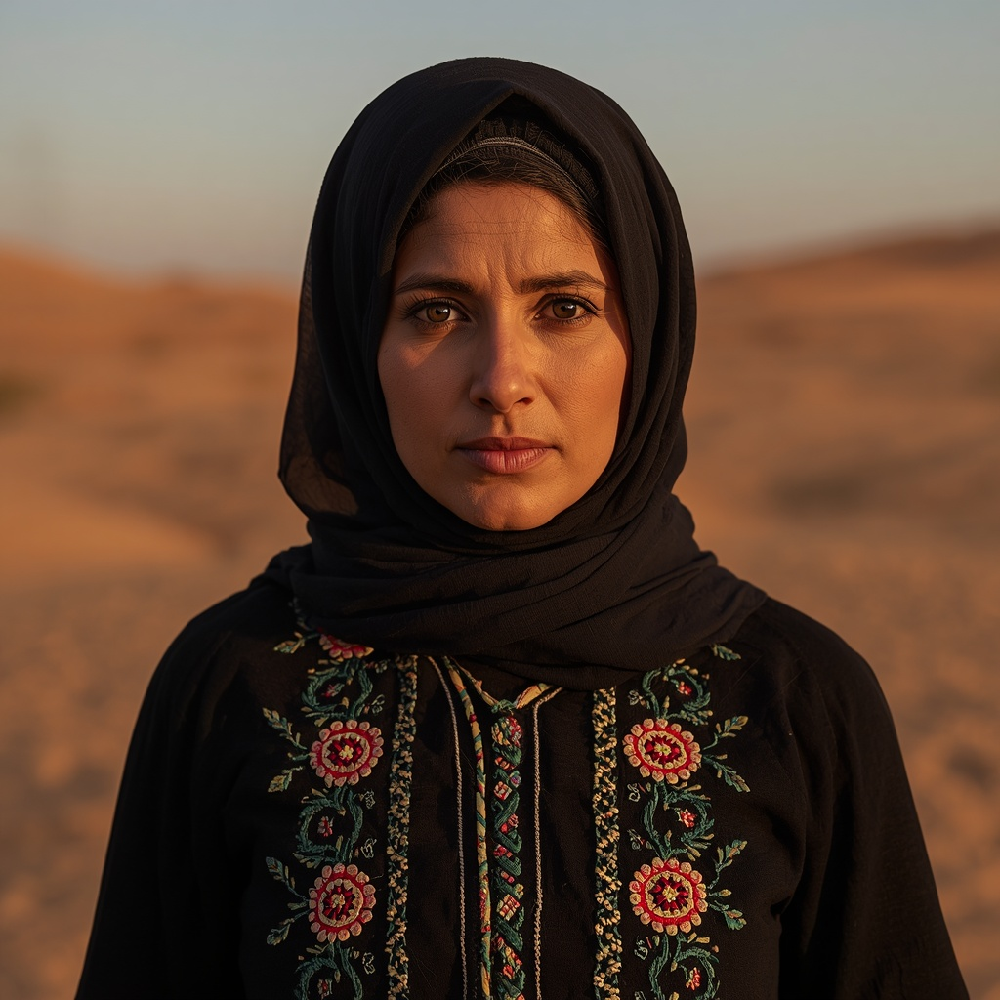

🧑🤝🧑 世界の民族・人びと
People of the World。国境を越えて暮らす人びとを、地域ごとに紹介します。伝統だけでなく、今の暮らしも一緒に。

ベドウィン
🗣 使用言語
アラビア語(ベドウィン方言)
👥 人口の目安
約2,000万人以上(サウジアラビア、ヨルダン、アラブ首長国連邦、エジプトなど中東・北アフリカ一帯)
👘 伝統衣装
男性は白い長衣「トーブ」に頭布「グトラ」と黒い輪状の留め具「アガル」を合わせ、女性は黒を基調とした長衣に刺繍や銀の装身具を施すことが多い。
🏠 住居
黒いヤギの毛で織った天幕「バイト・アルシャアル」に住み、男性用・家族用・調理場など用途ごとに内部を区切る伝統があった。
🍲 食文化
ラクダやヤギ、羊の乳・肉を中心とした食生活を営み、ラクダは移動手段としても食料としても重要な存在だった。
🎵 音楽・踊り
口承詩「ナバティ詩」が最も重要な芸能とされ、剣を用いた伝統舞踊やラクダレースが祝祭の場で披露される。
🎉 行事・祭り
結婚式や部族の集まりでは詩の朗唱や踊り、ラクダレースが行われ、近年は湾岸諸国で鷹狩りなど伝統文化を再興する動きも見られる。
🙏 信仰・価値観
大多数がスンニ派イスラム教を信仰し、一部にシーア派の信者や、かつてはキリスト教を信仰する集団も存在した。
📜 歴史
紀元前6000年頃にシリア・アラビア砂漠地帯で遊牧生活を営み始めたとされ、隊商への課税や季節的な移動を伴う生活を続けてきた。19世紀のオスマン帝国による土地改革や20世紀の定住化政策により、遊牧生活から定住生活への移行が進んだ。
🏙 現代の暮らし
都市化が進み遊牧を離れて都市部で働く人が増える一方、牧畜と農業を組み合わせた半定住生活を営む人々もいる。
🇯🇵 日本との関係
中東の砂漠観光やラクダツアーは日本の旅行番組でもたびたび紹介されており、伝統的な遊牧文化への関心が広がっている。
🌍 関連する国


出典: https://en.wikipedia.org/wiki/Bedouin(2026-09-01時点) / https://www.britannica.com/topic/Bedouin(2026-09-01時点)